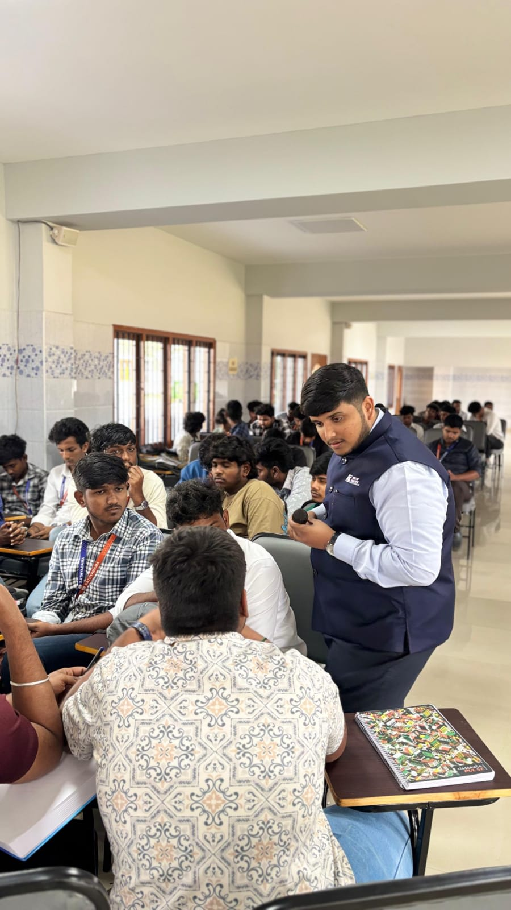
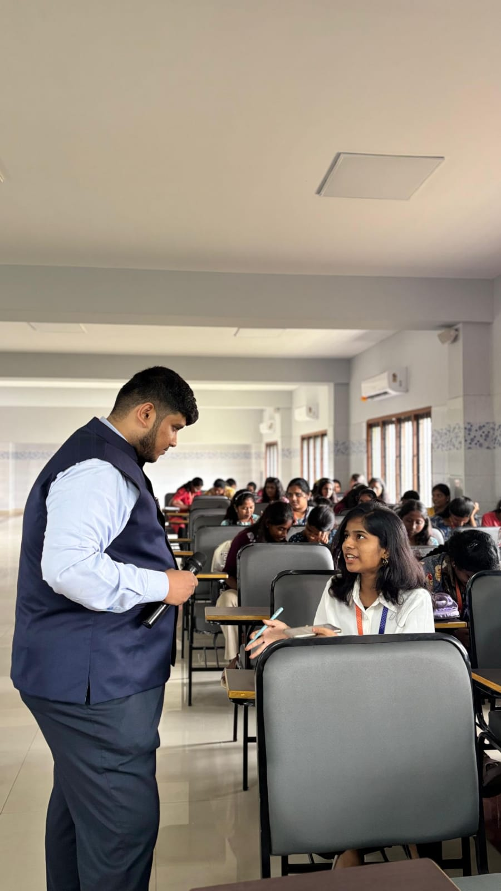
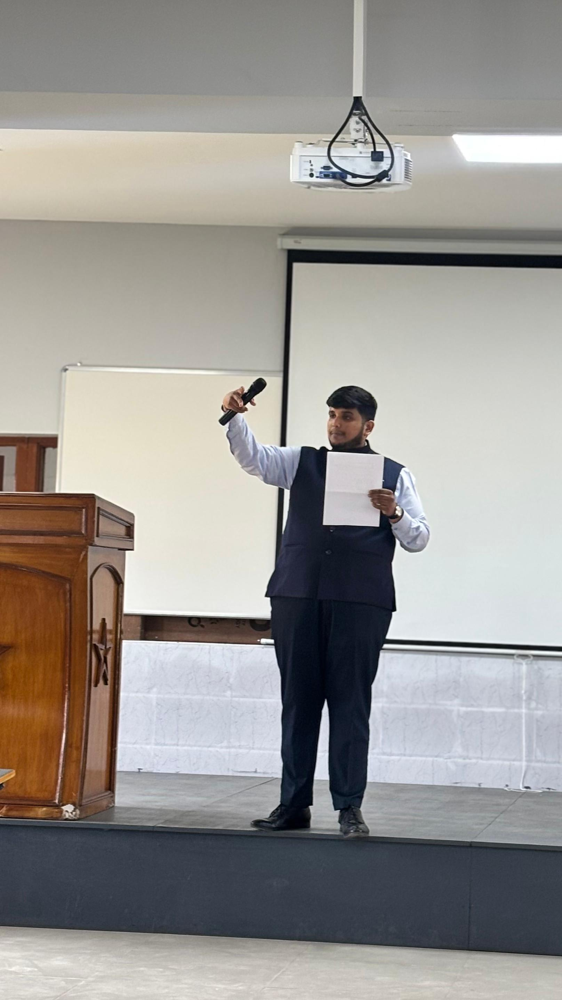
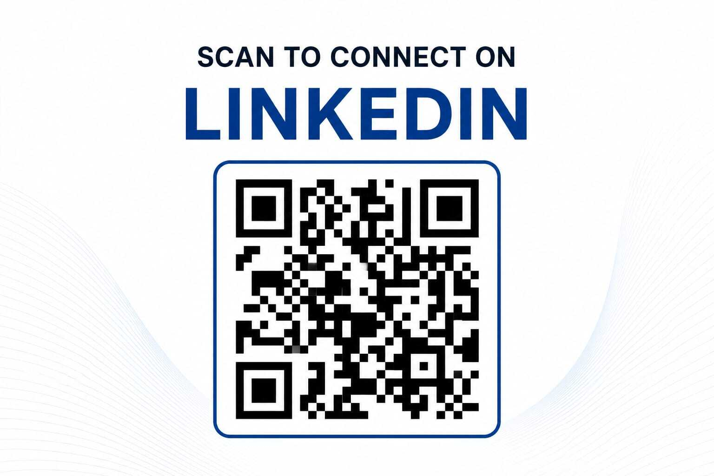

College Division
Industry-integrated learning for higher education — skill development, employability and professional readiness.
Learning & Transformation Platform
Redefining the Boundaries of Learning
We bridge academic knowledge, industry expectations and real-world professional capability — partnering with colleges, schools and industries through experiential, action-oriented learning.
Industry-integrated learning for higher education — skill development, employability and professional readiness.
Building practical capabilities for the next generation through communication, leadership and future-skills programmes.
Learning solutions for organisations and professionals — workplace capability, communication and behavioural growth.
Differentiation
Axiom Frontier bridges the gap between what people learn and what the real world expects.
Learning informed by practical professional exposure.
Connecting concepts with situations beyond the textbook.
Encouraging participants to think, discuss, apply and engage.
Connecting academic learning with professional expectations.
From focused sessions to structured multi-day programmes.
Programmes developed and updated around changing industry requirements.
About Us
Axiom Frontier is a learning and transformation platform focused on bridging the gap between academic knowledge, industry expectations and real-world professional capability. Working with students, educational institutions, emerging professionals and organisations, we develop practical, experiential and action-oriented learning experiences designed to move beyond the classroom.
“Beyond textbooks. Beyond theory. Into practice.”
To redefine learning by creating practical, relevant and transformative experiences that prepare individuals for the real world.
To connect education with industry through experiential learning, practical skill development and action-oriented transformation programmes.
Learning becomes meaningful when knowledge can be understood, applied and experienced.
Build clarity around the concept.
Connect learning with real-world situations.
Turn knowledge into action through practical activities.
Build capabilities carried into academic and professional life.
Axiom Frontier is not simply about delivering lectures — it is about creating learning experiences.
Portfolio
Three integrated divisions, each designed around the people they serve.
A practical, industry-oriented learning experience connecting logistics and supply-chain concepts with real-world professional environments.
Practical communication development for academic and professional environments.
Preparing students for professional expectations, workplace behaviour and the transition from education to employment.
Helping students present their capabilities professionally and approach career opportunities strategically.
Structured, deeper-learning programmes for participants seeking advanced practical knowledge and continued development.
Helping students discover career pathways and understand what different professional journeys involve.
Building the ability to express ideas clearly and engage with confidence in academic and social settings.
Introducing digital awareness and emerging capabilities that prepare students for a changing world.
Introducing leadership and entrepreneurial thinking through practical, experiential activities.
Learning interventions that strengthen professional capability across teams and roles.
Practical communication training designed for workplace capability and collaboration.
Facilitated sessions building leadership perspective and decision-making capability.
Action-oriented facilitation focused on mindset, behaviour and workplace effectiveness.
Learning interventions designed around specific organisational requirements.
Institutions can engage through Guest Sessions, Workshops, Multi-Day Programmes, Advanced Programmes, Custom Programmes, or Academic–Industry Engagement.
Leadership
Founder & Lead Speaker, Axiom Frontier
Founder & Lead Speaker of Axiom Frontier, with 7+ years of practical industry experience and professional exposure within the global shipping and logistics environment. His work carries a strong focus on practical learning, public speaking, facilitation and industry–academia engagement — shaping programmes that connect what students learn with what the professional world expects.
“Creating learning experiences that move beyond knowledge towards capability, confidence and transformation.”
Gallery
Workshop photography will populate this space as programmes are delivered.

College Sessions
School Workshops
Guest LecturesTestimonials
Authentic reflections from students who attended Axiom Frontier learning sessions.
“The trainer explained the Business Model Canvas in a clear, interactive, and easy-to-understand manner. Real-world examples and practical activities helped me understand each component effectively. The session was well-organized and engaging.”
Senthil • Adhi College of Engineering and Technology“I had attended many IIC events, but this was the best. All other speakers had experience, but today's speaker was exceptionally engaging with the audience.”
Aristo Paul P • Adhi College of Engineering and Technology“He explained the business planning skill in an understandable manner. The concepts were simple to follow, practical, and easy to apply during the session.”
Subhashini R • Adhi College of Engineering and TechnologyContact
Reach out to explore a workshop, guest lecture or partnership with Axiom Frontier.

Scan to connect on LinkedIn